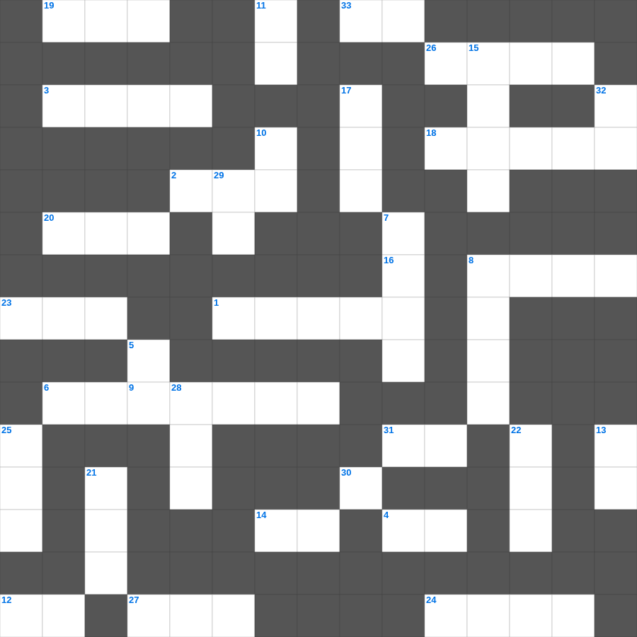

에베소서: 전신 갑주
📌 서비스 정의
십자가로세로는 교회 주보와 주일학교에서 사용할 수 있는 성경 기반 가로세로 퍼즐 서비스입니다. 성경 인물, 사건, 핵심 구절을 바탕으로 제작되었습니다. 온라인 풀이 및 인쇄 기능을 제공합니다.
무료로 즐기는 에베소서 에베소서 말씀 퀴즈! 35개의 힌트로 구성된 가로세로 낱말 퍼즐입니다. PC와 모바일 모두 지원되며, 정답을 바로 확인할 수 있어 혼자서도 쉽게 풀 수 있습니다.

📝 가로 힌트
1. 엘리가 의자에서 넘어져 목이 부러져 죽은 이유
2. 베드로가 하루에 전도하여 세례받은 사람 수
3. 하나님의 말씀을 가르치고 배우는 곳
4. 여호와 이것: 평강의 하나님
6. 죄를 속하기 위해 드리는 제사
8. 느헤미야의 성벽 재건 기간
9. 탕자가 돌아왔을 때 아버지가 입혀준 것
12. 하나님이 세상을 창조하신 기간(일)
14. 쓴 물이 단물로 변한 곳
18. 웃사가 법궤를 만지다 죽은 사건
19. 사드락과 친구들이 던져진 곳
20. 맥추절 혹은 칠칠절이라 불리는 신약의 절기
23. 아론의 지팡이에서 핀 꽃
24. 사무엘이 세운 기념비
26. 교회는 그리스도의 몸
27. 예수님이 변화되신 산
30. 낮을 주관하게 하신 큰 광명체
31. 바다의 물고기와 이것들
33. 세례를 주는 물의 영적 의미
📝 세로 힌트
5. 어려운 이웃을 돕는 일
7. 요나를 삼켰던 존재
8. 떡 다섯 개와 물고기 두 마리로 오천 명을 먹이심
10. 새 이것을 너희에게 주노니
11. 성막 내부를 덮는 휘장의 색깔(청색, 자색, 이것)
13. 나는 마음이 이것하고 겸손하니
15. 예수님이 태어나신 마을
15. 예수님이 태어나신 동네
16. 그물에 가득 찬 각종 이것
17. 하나님의 법궤를 보관하던 상자
21. 평안히 눕고 이것하기도 하리니
22. 예수님의 옷자락을 만져 나은 병
25. 이스라엘이 광야에서 보낸 년수
28. 하나님의 보좌 앞 일곱 등불
29. 마음이 가난한 자가 받는 복
32. 초대 교회에서 구제를 위해 세운 일곱 이것
🧑🏫 교회 교육 자료 활용
이 퍼즐은 주일학교 교재 추천 자료로 활용할 수 있고, 주일학교 주보에 넣기 좋은 분량으로 구성되어 있습니다. 수업용 주일학교 교안에 활동지로 붙이거나, 예배 후 복습용 주일학교 공과교재로 바로 사용할 수 있습니다.
🏷️ 키워드
에베소서 말씀 퀴즈, 에베소서, 십자가로세로, 성경퀴즈, 말씀퀴즈, 가로세로퍼즐, 주일학교 교재 추천, 주일학교 주보, 주일학교 교안, 주일학교 공과교재